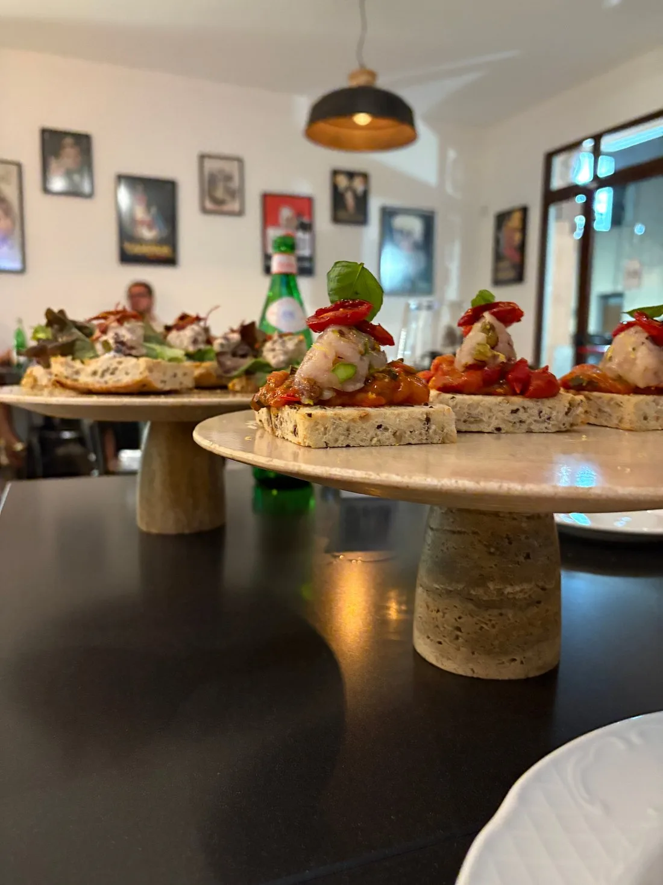
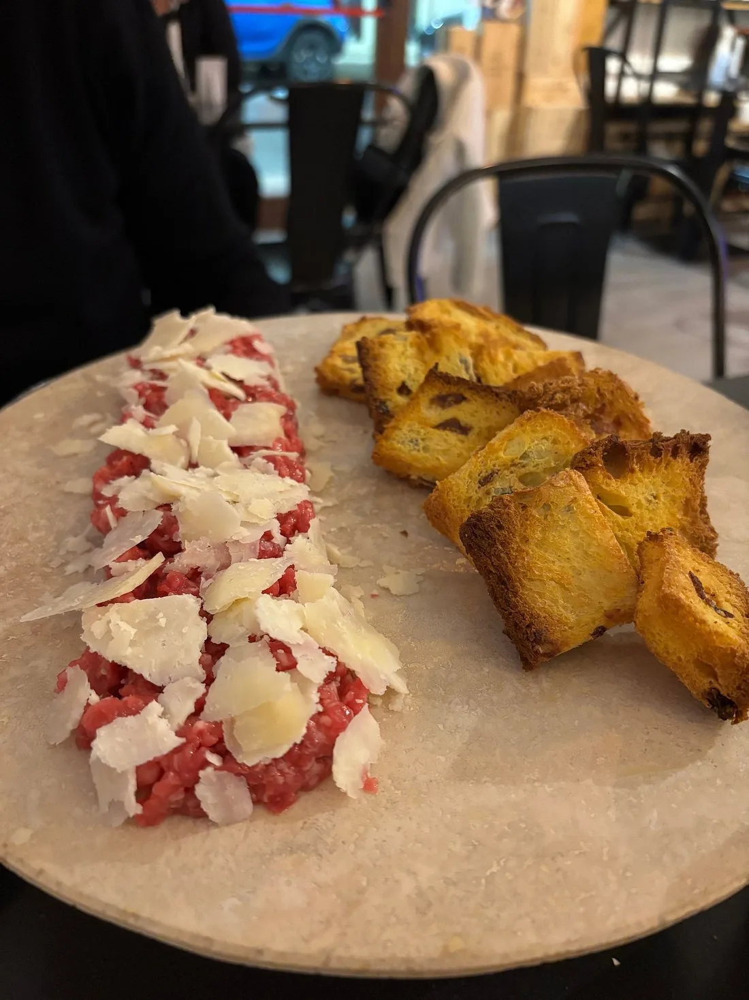
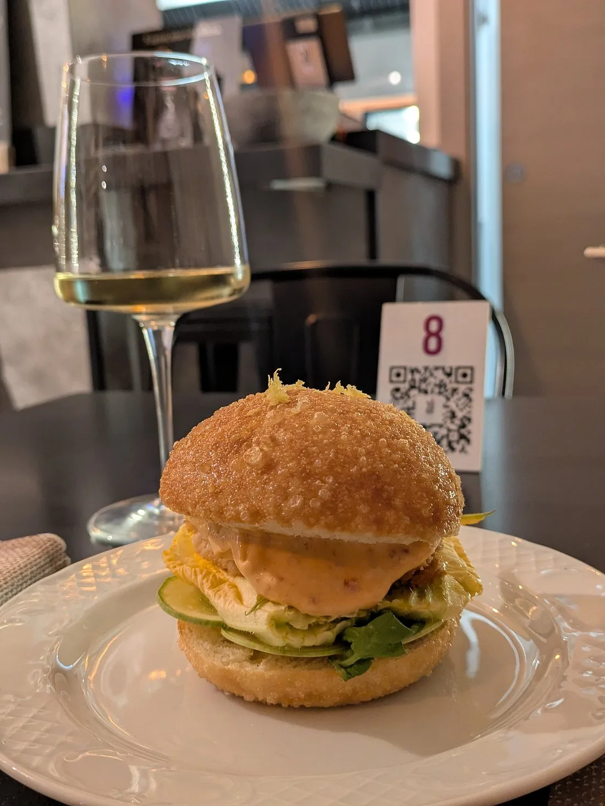
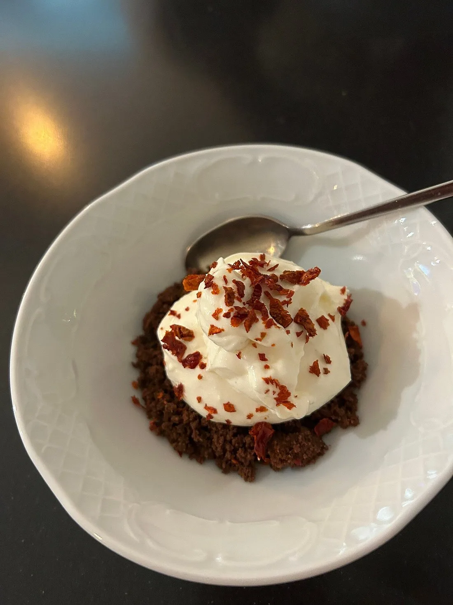
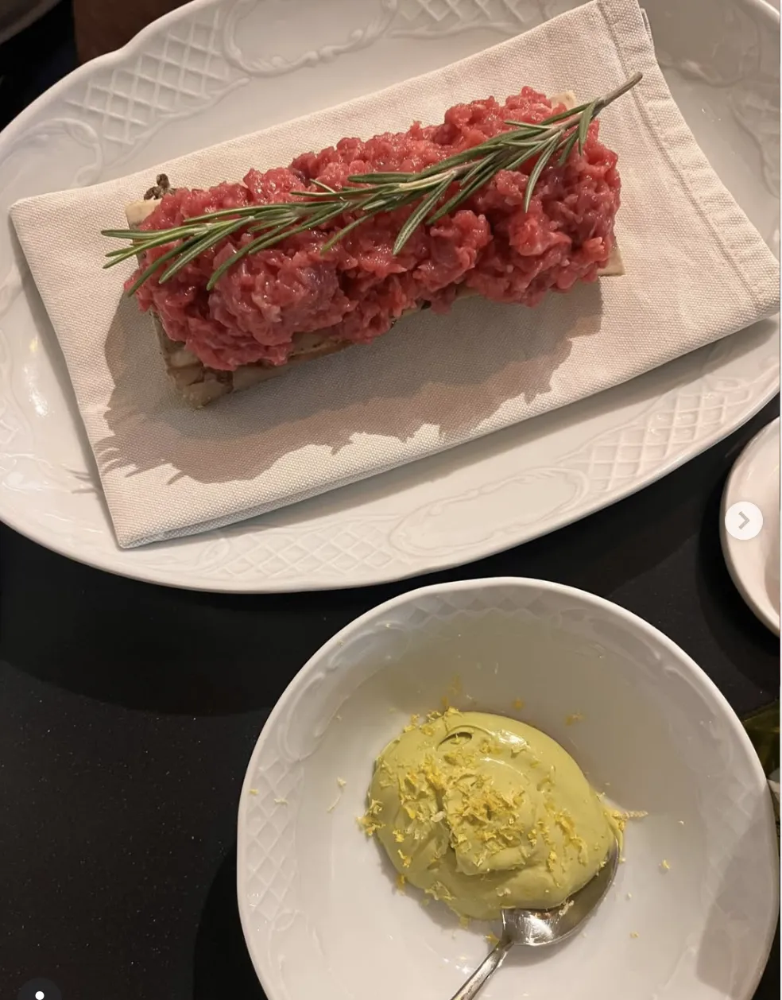
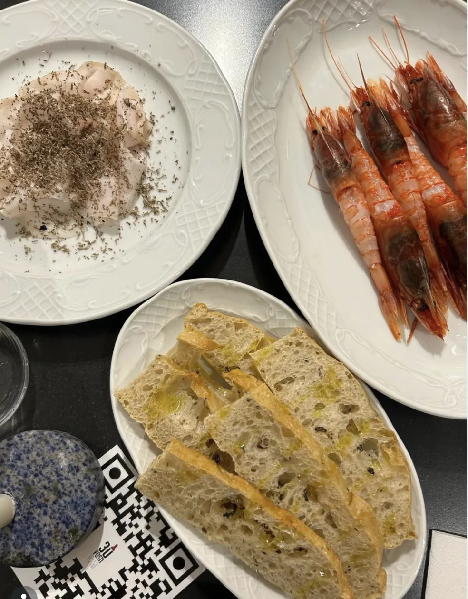

Storie di cibo e di vino
Abbiamo solo 30 posti. Per scelta.
Raccontiamo storie
Dietro ogni aperitivo, cena o calice di vino c'è una storia. Non vediamo l'ora di scoprire la tua.
Tre cuochi di 25 anni, formati ad Alma — la scuola di alta cucina italiana. Una cucina aperta, un menu che cambia, una ricerca quotidiana sulla materia prima.
Formaggi AOP direttamente dai caseifici d'alpe. Salumi con nome, cognome e stagionatura. Gamberi che arrivano da Mazara del Vallo. Carciofi bianchi di Pertosa, presidio Slow Food.
E le zucchine del nonno di Tortora, coltivate in quota nelle montagne di Calabria come si faceva una volta.
Via della Grotta, 13 · Praia a Mare (CS) · Calabria

"Accomodatevi.
La vostra storia comincia da qui."
La materia prima racconta
Nazionale · Internazionale · Dal nonno di Tortora
Formaggi AOP & DOP
Salumi d'eccellenza
Il Parmigiano
Caseificio San Simone 1902. Ogni anno di stagionatura è una storia in più — fino a 100 mesi.
Dal nonno di Tortora
Zucchine, pomodori, peperoni, erbe aromatiche. Coltivati in quota nelle montagne di Tortora, come si faceva una volta. Chilometro zero non per moda — per famiglia.
Il menù
Coperto €3,00 · Focaccia calda + olio EVO + sale Maldon per tutta la durata del pasto
Apertura di serata. Piccoli assaggi per iniziare a raccontare.
Zafarane Ridde
Peperoni cruschi di Senise IGP
Fichi neri caramellati artigianali
Peperoncini ripieni di tonno della Cantabria
Giardiniera homemade
Piatti degustazione per 2 persone, con confetture e accompagnamenti selezionati.
Formaggi Francesi AOP
€30,00 x2Con confettura di mirtilli & spezie
Coeur de Neufchâtel AOP
Fourme d'Ambert AOP
erborinato pennicillum roqueforti
Mimolette AOC 12 mesi
Beaufort AOP d'alpage 18 mesi
Comté AOP d'alpage 30 mesi
Tomme de Tarentaise IGP 12 mesi
Cantal AOP Vieux
Formaggi Europei
€30,00 x2Con confettura di fichi & miele
Tête de Moine AOC
Blue Stilton DOP
Reypenaer VSOP 24 mesi
Mahón-Menorca DOP
San Simón da Costa DOP
affumicato
Gruyère de cave AOP
L'Étivaz AOP
solo estate, latte d'alpeggio
Il Parmigiano
€20,00 x2Caseificio San Simone 1902 · Miele mille fiori di montagna
Porzione 140g circa. Serviti con focaccia calda e mostarda artigianale.
Culatello Terre di Nebbia
Parma · Nebbia padana
Spalla cruda di Palasone
Piacenza
Patacotto
Calabria
Jamón de Teruel DOP
Spagna · 30 mesi
Jamón Pata Negra Joselito Gran Reserva
Jabugo · Bellota · 48 mesi
Lardo di Pata Negra 100% de Bellota
Spagna
Cucinati con amore.
Cappello del prete brasato al Sangiovese
€28,00Purea di patate Sila IGP alla Robuchon
Gamberi rossi di Mazara del Vallo
€35,00Lardo Pata Negra 100% de Bellota · carciofi bianchi di Pertosa (presidio Slow Food) · focaccia al tartufo nero e nocciole
Magatello in salsa tonnata
€32,00Fondo bruno · spinacini al burro della Normandia · Parmigiano Reggiano 100 mesi · piada romagnola
Battuta di Vitellone Bianco dell'Appennino centrale IGP
€34,00Tuorlo marinato · asparagi · formaggio di fossa di Sogliano DOP · focaccia al tartufo nero e nocciole
Toast: Patacotto e Comté d'alpeggio
€24,00Comté d'alpeggio 30 mesi · zucchine alla scapece · mayonnaise alla senape antica di Dijon
Filetti di alici croccanti
€16,00Mayonnaise alla 'Nduja di suino nero di Calabria
Ovetto di montagna
€18,00Purea di piselli · fonduta di Roquefort · peperone crusco di Senise IGP
Pan Brioche
€16,00Lardo Pata Negra 100% de Bellota · purea di cipolla rossa di Tropea IGP · insalatina di fave · acciughe del mar Cantabrico Serie Oro "Codesa"
Il nostro concetto di dolce.
Pan Brioche ai 3 cioccolati
€6,00Mousse al mascarpone e cacao
Cheesecake Enotria
€6,00Biscotto al cacao · mousse al formaggio · nocciole delle Langhe IGP · peperone crusco di Senise IGP
Cantucci alle mandorle
€8,00Con calice di Passito Fabula IGP "Gioia al Negro"
Gli amari e digestivi variano in base alla selezione del mese — richiedili al personale o consulta la lavagnetta.
Italian Grape Ale artigianali sui vitigni calabresi. 0,33cl · €9,00 cad.
Casa Comerci "Magliocco canino"
Tenuta di Vibo Valentia
Librandi "Gaglioppo"
Tenuta di Crotone
Antonella Lombardo "Greco Bianco"
Tenuta di Reggio Calabria
Statti "Greco nero"
Tenuta di Catanzaro
Spadafora "Pecorello"
Tenuta di Cosenza
Acqua Panna 0,75cl naturale
€3,00Acqua San Pellegrino 0,75cl
€3,00Coca Cola 0,33cl
€3,00Coca Cola Zero 0,33cl
€3,00



Una cantina viva
Oltre 100 etichette. Sfogliala come se fossi a casa.
La nostra cantina non è un catalogo — è un racconto in movimento. Ogni settimana entra qualcosa di nuovo, qualcosa esce. Le bottiglie sono disposte liberamente: i clienti possono sfogliarle, leggere le etichette, chiedere di stapparne una.
Bianchi naturali, rossi di vigna, bollicine inaspettate. Con un'attenzione particolare alle 5 cantine calabresi partner di Birra Cala — perché la Calabria ha vini che meritano di essere raccontati.
Vini al calice disponibili ogni sera · Carta in continuo aggiornamento
Birra Cala · IGA · Italian Grape Ale
Birra artigianale
sui vitigni di Calabria
"Cinque cantine, cinque vitigni, un'idea: la Calabria nel bicchiere."
Un progetto unico in Calabria: birre IGA prodotte con mosto di vitigni autoctoni, in partnership con cinque cantine d'eccellenza della regione. Ogni birra porta il nome del vitigno, la firma della cantina, l'anima del territorio.
Servite a 30 Posti in bottiglia da 0,33cl — €9,00 cad.
Casa Comerci
Vibo Valentia · Magliocco canino
Librandi
Crotone · Gaglioppo
Antonella Lombardo
Reggio Calabria · Greco Bianco
Statti
Catanzaro · Greco nero
Spadafora
Cosenza · Pecorello
La vostra storia
comincia da qui
Prenotare è semplice — scrivici su Instagram e ti confermiamo il posto in pochi minuti.
Scrivi su @30posti.officialDove siamo
Via della Grotta, 13
87028 Praia a Mare (CS)
Calabria, Italia
Quando
Mar – Dom
18:00 – fino a tardi
Pranzo solo su prenotazione
Lunedì chiuso
Seguici
@30posti.officialIl nostro Instagram è la nostra voce quotidiana. Prenotazioni, storie, novità dalla cantina.